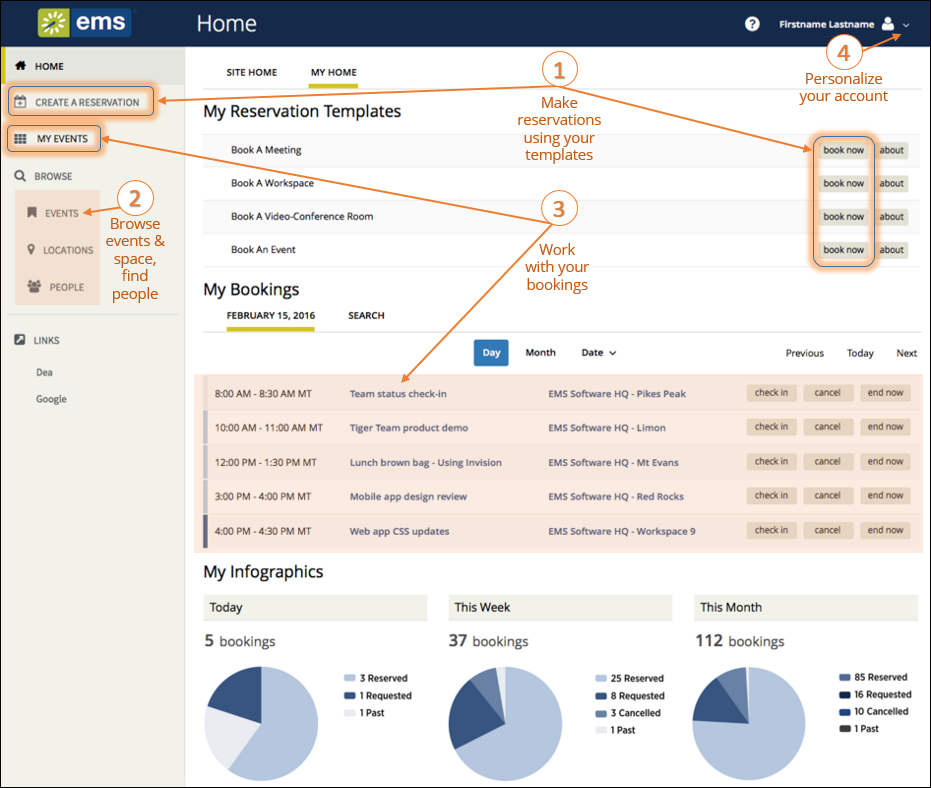

Note: If not all options display or you are logged in as a Guest, you may need a User Account created by your Administrator.
Once you have signed in to EMS, you will see a menu on the left and your home page on the right. To begin making a reservation, click CREATE A RESERVATION. To explore events, locations, and people, use the options under BROWSE.
|
|
Note: If not all options display or you are logged in as a Guest, you may need a User Account created by your Administrator. |
The menu on the left enables you to:
Information on your home page varies depending on your Administrator's settings and User Preferences. For most users, the page shows three regions:


|
Tip: Anywhere you see "..." on a room name, you can click to expand and see the full room name. |
Clicking the SITE HOME tab will show your organization's customized EMS home page.